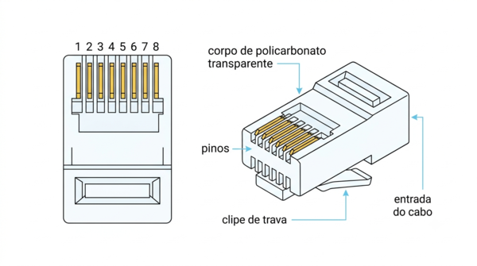
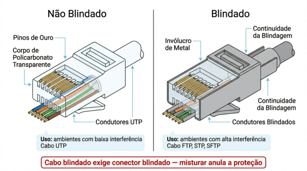
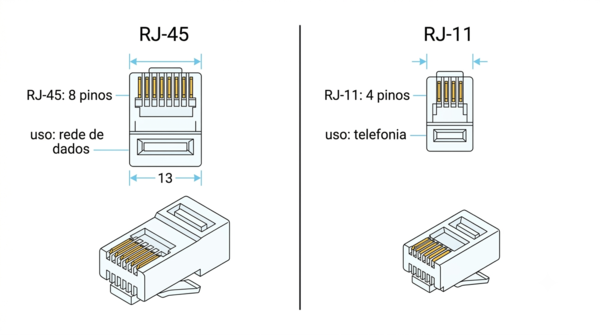
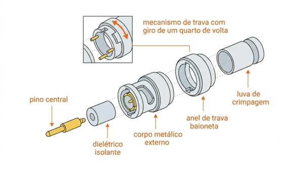
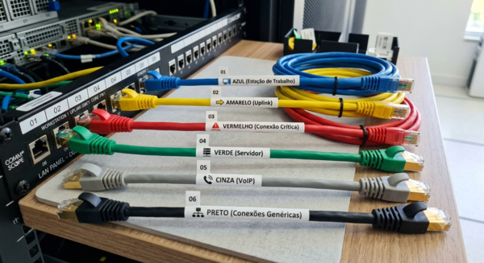
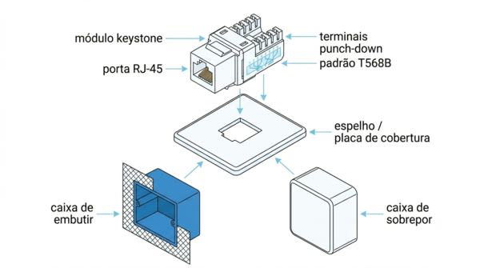

Infraestrutura Física de Redes
AULA 08 — Conectores e Tomadas
1. O Conector RJ-45

O RJ-45 (Registered Jack 45) é o conector padrão para cabos de par trançado em redes locais. Está presente em toda placa de rede, switch, roteador, patch panel e tomada de rede local.
Construção Física
O conector RJ-45 é composto por:
- Corpo transparente de policarbonato: permite visualizar a posição dos fios durante a crimpagem
- 8 pinos dourados: contatos metálicos que estabelecem a conexão elétrica com o equipamento
- Clipe de trava: peça plástica que trava o conector na porta, evitando desconexão acidental. Sempre pressionar o clipe antes de remover o conector — nunca puxar pelo cabo
- Canal de entrada do cabo: por onde o cabo entra no conector durante a crimpagem
Os pinos são numerados de 1 a 8, da esquerda para a direita, com o clipe voltado para baixo e os pinos visíveis.
Versões: Cabo Sólido e Multifilar
O conector RJ-45 existe em duas versões, adequadas para tipos diferentes de cabo:
Para cabo sólido: cada fio do cabo é composto por um único condutor de cobre sólido. É o tipo usado no cabeamento de instalação — embutido em paredes, passado por canaletas e eletrodutos. Os pinos do conector penetram o isolamento e fixam no condutor sólido.
Para cabo multifilar (stranded): cada fio é composto por múltiplos fios de cobre fino trançados entre si. É o tipo usado em patch cords — cabos de conexão entre equipamentos. Mais flexível, suporta dobramento repetido sem quebrar. Os pinos do conector abraçam os múltiplos fios.
Atenção: usar o conector errado para o tipo de cabo compromete a conexão — um conector para cabo sólido numa aplicação de patch cord pode resultar em mau contato após algumas flexões.
Categorias
Assim como os cabos, os conectores RJ-45 são fabricados em categorias que definem seu desempenho elétrico:
| Categoria | Compatível com |
|---|---|
| Cat5e | Cabos Cat5e — instalações legadas |
| Cat6 | Cabos Cat6 — padrão atual |
| Cat6A | Cabos Cat6A — 10 Gbps em distância plena |
A categoria do conector deve ser igual ou superior à categoria do cabo. Usar um conector Cat5e num cabo Cat6 cria um gargalo — o ponto mais fraco da instalação determina o desempenho de todo o segmento.
Blindado vs. Não Blindado

Conectores RJ-45 blindados possuem um invólucro metálico que se conecta à blindagem do cabo, garantindo continuidade da proteção eletromagnética até o equipamento.
Devem ser usados obrigatoriamente em instalações com cabos blindados (FTP, STP, SFTP). Misturar cabo blindado com conector não blindado anula a proteção e pode criar antenas acidentais que pioram o desempenho.
2. O Conector RJ-11
O RJ-11 é o conector padrão de telefonia — o mesmo presente nos telefones fixos residenciais e nos modems DSL.
Diferença Visual em Relação ao RJ-45

O RJ-11 é visivelmente mais estreito que o RJ-45:
| RJ-45 | RJ-11 | |
|---|---|---|
| Largura | ~11,7 mm | ~9,65 mm |
| Número de pinos | 8 | 4 (ou 6) |
| Uso | Redes de dados | Telefonia, DSL |
Apesar de visualmente semelhantes, os dois conectores não são intercambiáveis. Um conector RJ-11 pode ser inserido fisicamente numa porta RJ-45 — mas não fará contato correto e pode danificar a porta.
Por que Não Deve Ser Usado em Redes de Dados
O RJ-11 não foi projetado para as frequências e os padrões elétricos das redes de dados modernas. Seu uso em redes de dados resulta em conexões instáveis, erros de transmissão e impossibilidade de atingir as velocidades especificadas pelo cabo.
3. O Conector BNC

O BNC (Bayonet Neill-Concelman) é o conector padrão para cabos coaxiais em sistemas de CFTV e equipamentos de medição.
Construção Física e Mecanismo
O BNC é um conector cilíndrico metálico com mecanismo de baioneta — encaixa e trava com um quarto de giro. Isso proporciona conexão rápida, segura e resistente a vibrações.
É composto por:
- Pino central: conecta ao condutor central do cabo coaxial
- Corpo metálico externo: conecta à malha de blindagem do cabo
- Trava de baioneta: dois pinos que encaixam nas ranhuras da porta receptora
Aplicação Atual
O BNC praticamente desapareceu das redes de dados, mas permanece amplamente usado em:
- CFTV analógico: câmeras e gravadores de vídeo analógico (DVRs)
- CFTV HD: sistemas HD-CVI, HD-TVI e AHD usam coaxial com BNC para câmeras de alta definição
- Equipamentos de medição: osciloscópios, geradores de sinal e outros instrumentos de laboratório
Tipos de Conectores BNC
BNC macho: instalado nas extremidades do cabo coaxial. Conecta às portas fêmeas dos equipamentos.
BNC fêmea: presente nas câmeras, DVRs e equipamentos. Recebe o conector macho do cabo.
Adaptador T: permite conectar dois cabos e um equipamento num mesmo ponto — usado em instalações legadas de rede coaxial (Ethernet 10Base2).
Terminador BNC: resistor de 50 Ω instalado nas extremidades de redes coaxiais legadas para evitar reflexão de sinal. Sem o terminador, a rede coaxial não funciona.
4. Patch Cords
O que São e Qual sua Função
Patch cord é o cabo de conexão usado para interligar equipamentos dentro de uma instalação de rede — do patch panel ao switch, do switch ao servidor, da tomada de rede ao computador do usuário.
Diferente do cabo de instalação (que fica embutido na parede ou passado por canaletas e não deve ser movido), o patch cord é projetado para uso externo, com flexibilidade para ser conectado e desconectado com frequência.
Diferença entre Patch Cord e Cabo de Instalação
| Cabo de Instalação | Patch Cord | |
|---|---|---|
| Condutor | Sólido | Multifilar (flexível) |
| Uso | Embutido, fixo | Externo, móvel |
| Comprimento típico | Até 90 metros | 0,5 m a 10 m |
| Conectores | Crimpados em campo ou terminados em keystone | Crimpados em fábrica |
| Flexibilidade | Baixa | Alta |
O patch cord deve ter a mesma categoria do cabeamento da instalação — ou superior. Um patch cord Cat5e num projeto Cat6 cria um gargalo de desempenho exatamente no ponto mais visível e mais trocado da instalação.
Tipos por Material
Patch cord de cobre: par trançado com conectores RJ-45 nas duas extremidades. É o tipo mais comum — usado em todas as conexões de rede local convencional.
Patch cord de fibra óptica: fibra óptica com conectores de fibra (SC, LC) nas extremidades. Usado para conectar equipamentos com interfaces ópticas — switches de núcleo, servidores com placas de fibra, conexões de backbone.
Comprimentos Comuns e Cores
Patch cords são fabricados em comprimentos padronizados: 0,5 m, 1 m, 1,5 m, 2 m, 3 m, 5 m e 10 m. Para distâncias maiores, o correto é usar o cabeamento estruturado — não patch cords longos.

As cores não têm significado técnico definido por norma, mas são amplamente usadas como sistema de identificação visual:
| Cor | Uso comum (por convenção) |
|---|---|
| Azul | Dados — conexões de estações de trabalho |
| Amarelo | Uplinks e conexões entre switches |
| Vermelho | Gerência de rede, conexões críticas |
| Verde | Conexões de servidores |
| Cinza | Telefonia VoIP |
| Preto | Conexões genéricas |
Cada organização pode adotar sua própria convenção de cores — o importante é documentar e manter o padrão consistente em toda a instalação.
5. Tomadas RJ-45

O que São e Onde São Instaladas
A tomada RJ-45 é o ponto de acesso à rede disponível para o usuário final — instalada na parede, no piso ou no mobiliário, é onde o usuário conecta o patch cord do seu equipamento.
É o ponto de terminação do cabeamento horizontal — a extremidade visível de todo o cabo que percorre paredes e canaletas desde o patch panel na sala de telecomunicações.
Construção: Módulo Keystone e Espelho
A tomada RJ-45 moderna é composta por duas partes:
Módulo keystone: o componente ativo da tomada — contém os contatos elétricos onde os fios do cabo de instalação são terminados (por impacto, usando ferramenta punch-down) e a porta RJ-45 frontal onde o patch cord é conectado. É modular — pode ser trocado individualmente sem substituir toda a caixa.
Espelho (placa de cobertura): a peça decorativa que enquadra o módulo keystone na parede. Pode acomodar 1, 2 ou mais módulos keystone lado a lado. Disponível em variações para tomadas de embutir e de sobrepor.
Categorias
Assim como cabos e conectores, os módulos keystone são fabricados em categorias:
| Categoria | Aplicação |
|---|---|
| Cat5e | Instalações legadas — não recomendado para novas instalações |
| Cat6 | Padrão recomendado para novas instalações |
| Cat6A | Instalações que exigem 10 Gbps em distância plena |
A categoria do keystone deve ser compatível com a categoria do cabo de instalação e do patch cord — os três formam o canal de transmissão e o desempenho é determinado pelo componente mais fraco.
Padrões T568A e T568B
Os módulos keystone recebem os fios do cabo seguindo um dos dois padrões de pinagem — T568A ou T568B — marcados no próprio módulo com código de cores. A escolha do padrão deve ser consistente em toda a instalação: se o patch panel foi terminado em T568B, as tomadas também devem ser terminadas em T568B.
Caixas de Embutir e de Sobrepor
Caixa de embutir (flush mount): instalada dentro da parede, com apenas o espelho visível na superfície. É a solução mais elegante e a mais usada em instalações novas. Exige abertura na alvenaria ou drywall durante a obra.
Caixa de sobrepor (surface mount): fixada na superfície da parede, sem necessidade de abertura. Usada em retrofits — instalações realizadas após a obra, onde não é viável abrir a parede. Menos elegante, mas prática e de instalação simples.
Síntese da Aula
Os conectores e tomadas são os pontos de interface entre o cabeamento e os equipamentos — e sua qualidade determina diretamente o desempenho de toda a instalação. Os principais pontos desta aula:
- O RJ-45 é o conector universal do par trançado — deve ter categoria compatível com o cabo e o tipo correto (sólido ou multifilar)
- O RJ-11 é exclusivo de telefonia e não deve ser usado em redes de dados
- O BNC permanece em uso em sistemas de CFTV analógico e HD
- Patch cords são cabos flexíveis para conexões externas — categoria, comprimento e cor devem seguir um padrão documentado
- Tomadas RJ-45 são compostas por módulo keystone e espelho — disponíveis em versões de embutir e sobrepor